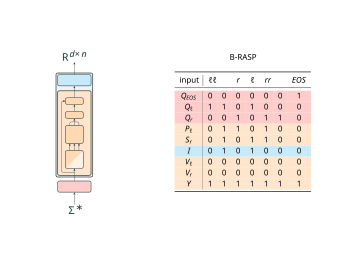

Hard-attention transformers are a model of transformers used for theoretical analysis, where attention values get concentrated on a single position (unique hard-attention) or spread uniformly over a small subset of positions (average hard-attention). In prior research, Elena Voita (et al) have observed that in trained transformers, attention actually does get concentrated on just a few positions, which suggests this theoretical model may provide insight into real-life transformer models.
More specifically, this work analyzes unique hard-attention transformers with future masking. The heart of the analysis is a little programming language Dana came up with called Boolean-RASP, inspired by Gail Weiss's RASP. This language facilitates our proof of the equivalence between the expressivity of masked hard-attention transformers and that of first-order logic, linear temporal logic, as well as counter-free automata (these link to some nice definitions).
*LIMITATIONS MAY APPLY*
In reality, transformers exhibit the capacity to attend
uniformly across all positions, a behavior not expressible by hard-attention models. Thus these
results give a strict lower bound with a sizeable gap from the actual expressivity of transformers.
Despite these limitations, I think this work still provides valuable insight for future research as a "base-case" for studying the formal expressivity of transformers. As one of the only known exact correspondences between a transformer variant and a logic, it places this line of studying transformer expressivity on firm foundations. Furthermore, the proof techniques used can provide inspiration for future work - in particular, Boolean-RASP and its possible extensions hold a lot of potential for simplifying future analysis of more complicated transformer models. I hope to see what comes next in this line of research!